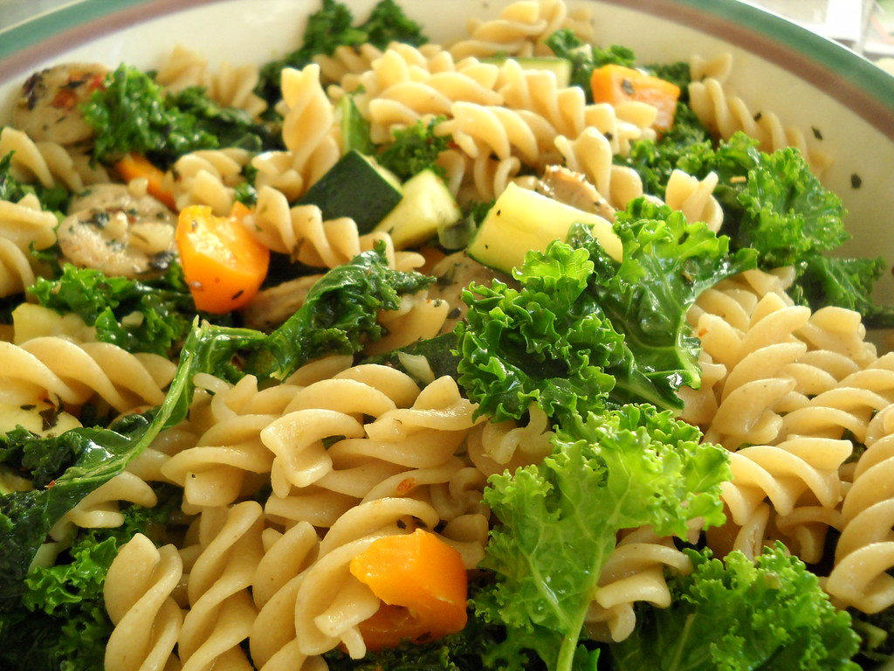

Roasted Veggie Pasta
Wonderful rustic Italian style pasta dish! Meal can be dressed up or down with accompaniments to this tasty pasta.

Ingredients :
- ¼ pound fresh asparagus
- 2 red bell pepper, sliced
- ¼ pound crimini mushrooms, sliced
- 10 cloves roasted garlic, chopped
- ½ tomato, quartered
- ½ teaspoon chopped fresh rosemary
- ½ teaspoon chopped fresh oregano
- 2 tablespoons olive oil
- 8 ounces dry fettuccini noodles
- ¼ cup grated Parmesan cheese
- 2 tablespoons tapenade
Directions :
- Preheat oven to 350 degrees F (175 degrees C). Prepare asparagus by trimming woody base and cutting diagonally into 4 inch pieces.
- In a roasting pan, combine asparagus, bell pepper, mushrooms, roasted garlic and tomato. Sprinkle with rosemary and oregano, then drizzle with olive oil. Bake in preheated oven for 15 minutes.
- Bring a large pot of lightly salted water to a boil. Add pasta and cook for 8 to 10 minutes or until al dente; drain. Toss with Parmesan cheese, tapenade and roasted vegetables.
Nutrition Facts:
457 calories; protein 16.8g; carbohydrates 66.7g; fat 14.6g; cholesterol 6.2mg; sodium 213.1mg.
Return to Main Recipes Page